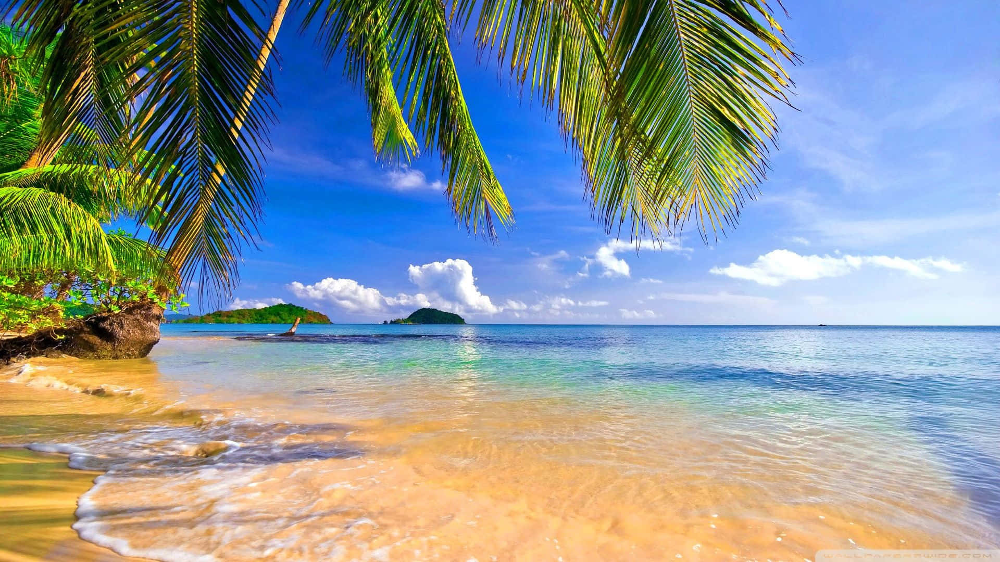
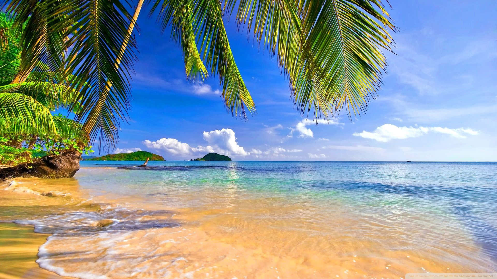

.jpeg) 
Conhecimento sobre o verão

Conhecimento sobre o verão
O verão é a estação mais quente do ano, marcada por dias longos, sol intenso e uma energia vibrante que contagia tudo ao redor. É tempo de férias, praias, piscinas, roupas leves e momentos ao ar livre. A luz solar intensa parece renovar os ânimos, despertando nas pessoas o desejo de aproveitar cada instante. Na natureza, o verão é sinônimo de vida em plena atividade. As plantas florescem, os animais estão mais ativos e as paisagens ganham cores fortes e vivas. É comum ver céus limpos, dias ensolarados e, em algumas regiões, chuvas rápidas no fim da tarde, que refrescam o ambiente e trazem o cheiro característico da terra molhada. É também um período de encontros e celebrações. Famílias e amigos se reúnem em viagens, festas e atividades ao ar livre. Sorvetes, sucos gelados e comidas leves se tornam os protagonistas da mesa. A alegria da estação está nas pequenas coisas: o som das ondas do mar, o brilho do sol na pele, o vento quente no fim da tarde. No entanto, o verão também exige cuidados. A exposição ao sol precisa ser equilibrada, com uso de protetor solar, hidratação constante e atenção à saúde. Apesar do clima alegre, é importante respeitar os limites do corpo e aproveitar com responsabilidade. Assim, o verão é muito mais do que uma estação é um convite à liberdade, ao movimento e à celebração da vida. Uma época em que o mundo parece sorrir com mais intensidade.
Fotos tiradas de praias deslumbrantes no verão: